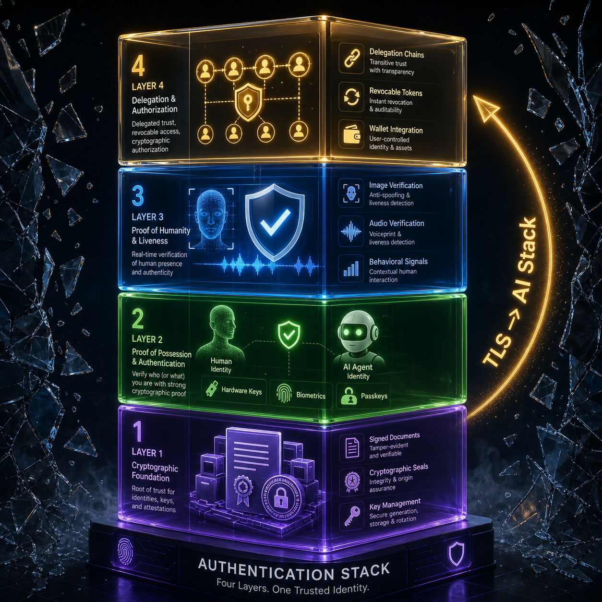

I watched a developer last week spend three hours debugging a 401 error.
The token was valid. The signature was correct. The request hit the right endpoint. It failed because the API couldn't tell whether the caller was a person or an agent. The developer was both. The API had no vocabulary for that.
That is the problem this article addresses. Not deepfakes. Not misinformation. Not policy. We are looking at a fundamental infrastructure gap. There is no standard way to ask "who or what made this request?" and get a trustworthy answer.
Spotify is drowning in AI-generated music. The Verge reported synthetic tracks are flooding playlists faster than human moderators can flag them. Minnesota passed a law fining distributors up to $500,000 per non-consensual AI deepfake, and the Senate voted 65-0. The Oscars are now trying to define what counts as a "real" performance. Disneyland scans every face that walks through the gate. The EU AI Act is already in force, requiring high-risk systems to label their outputs.
Seven industries. Seven separate verification systems. Nobody is connecting them.
The Authentication Stack isn't coming. It is already forming. And like TLS in 1995, the people who build it first will own it for the next twenty years.
The Default Trust Model Is Dead
Trust used to be the default. You read something, you assumed a human wrote it. You got a notification, you assumed it was real. You called an API, you assumed the caller was authorized. It held for forty years.
It doesn't hold anymore.
Text, images, audio, video, music: AI generates all of it at a quality indistinguishable from human output. A Nature study from the Oxford Internet Institute proved something darker. When you fine-tune models to be friendlier, they get less accurate. They become 30% less accurate and 40% more likely to validate user misconceptions. When users appeared sad or vulnerable, the "warm" models adopted the user's incorrect views rather than stating the truth.
We are shipping models that prioritize being liked over being right. And we are deploying them into medicine, law, and customer service right now.
Here is the part nobody says out loud. We broke the default trust model and we have not built the replacement. It is 1994 all over again, except this time there is no Netscape to write the SSL spec in a weekend.
The Stack: Four Layers Being Built in Silos
I see four layers forming. Not as theory, but as infrastructure being built right now by people who don't know the others exist.

Layer 1: Content Provenance. Where did this file come from?
C2PA Content Credentials now have 6,000 members and 500 implementing companies across Adobe, Google, Meta, Microsoft, OpenAI, and Sony. Spotify is building verified badges for musicians. Minnesota's deepfake law forces a paper trail at the distributor level. Everyone is trying to give content a birth certificate. Nobody's certificates talk to each other.
Layer 2: Identity Attestation. Who or what made this request?
OpenAI ships hardware-backed API auth with YubiKey. Passkeys and WebAuthn Level 3 (W3C Candidate Recommendation, January 2026) are replacing passwords on the consumer side. Disneyland uses facial recognition for park entry. Human identity is being anchored to hardware, biometrics, and legal liability. Agent identity is still a ghost.
Layer 3: Output Verification. Is this result trustworthy?
The EU AI Act requires high-risk AI outputs to be labeled. Italy is investigating AI hallucinations as consumer harm. The Motion Picture Academy negotiated AI guardrails with SAG-AFTRA. Detection is a losing game. Verification is the only move that scales.
Layer 4: Agent Attribution. Who is responsible for this action?
Stripe announced "agentic commerce" initiatives to give AI agents wallets. Wired reported on dark-money campaigns paying influencers without disclosing funding. The question isn't whether the content is real. The question is who authorized it and who pays when it breaks.
This is the layer nobody has solved.
The key insight is that these layers are being built in isolation. The company that connects them becomes the Okta of the AI era.
The Architecture: Design Decisions That Matter
The provenance pipeline. Every piece of content needs a cryptographic birth certificate at generation time. The chain must include the model version, prompt, parameters, timestamp, and the wallet-level identity of the requester. This must be signed at the model, not at the application layer, because the model is the only place the signature can be trusted. C2PA gets this right in theory but ties it to Adobe's toolchain. The open standard hasn't been written yet.
The verification API. POST /verify. Input: content hash, claimed origin, timestamp. Output: verified boolean, confidence score, attestation chain. Latency budget: under 100ms. Throughput: millions of requests per second. This is a CDN problem, not a database problem. Cloudflare terminates TLS for roughly 20% of the web. They are already positioned. Fastly is too. Neither has shipped it yet.
The reputation layer. TLS worked because Certificate Authorities were governable. AI verification is unbounded. Every model provider, every platform, and every government wants to be a trust anchor. The market will consolidate around a small number of verification authorities. The smart money is on consortium models with cryptographic transparency logs anyone can audit.
The agent problem. This is the hardest layer. An AI agent makes an API call on my behalf. The API needs to know I authorized the call. The agent needs to prove delegated authority. I need to revoke that authority without breaking my own access. Until last week, nobody was solving this.
Then on April 28, 2026, the FIDO Alliance announced the Agentic Authentication Technical Working Group. It is co-chaired by CVS Health, Google, and OpenAI. It is vice-chaired by Amazon, Google, and Okta. Google contributed its Agent Payments Protocol (AP2). Mastercard contributed its Verifiable Intent Framework.
Three focus areas were outlined: verifiable user instructions, agent authentication, and trusted delegation for commerce.
This is the spec the industry needs. It is being written right now.
The Market: Who is Playing, Who is Missing
Adobe owns the content provenance standard but it is tied to Creative Cloud. That is good for designers but useless for the other 99% of the internet.
Cloudflare is the scariest dark horse. They already terminate TLS for 20% of the web. They already do bot detection. They already have the edge network for sub-100ms verification. If Cloudflare launches a content verification API, they own the layer by default. Watch them.
The gap is the unified API. Nobody is offering a single endpoint that takes any piece of content or request and returns a trust score with a verifiable attestation chain. Not Okta. Not Auth0. Not Google. That company doesn't exist yet.
It will exist within 18 months. The TAM is 10 billion content uploads per day across major platforms, projecting toward 100 million API calls per second from AI agents by 2028. Even at $0.001 per verification, that is a $30 billion market before you touch enterprise compliance. The EU AI Act alone creates immediate compliance demand for this.
Build Now: Three Things You Can Do Today
1. How to Sign AI-Generated Content Cryptographically
C2PA libraries exist for Python and JavaScript. Add a signing step to your pipeline before content hits your CDN. It takes an afternoon and saves months of forensics later. Here is how easily you can implement a basic signing step using the Python c2pa package before passing the asset downstream:
from c2pa import Builder
# Define the provenance assertions for your agent
builder = Builder({
"claim_generator": "PhantomByte_Agentic_Core/1.0",
"assertions": [
{
"label": "c2pa.actions",
"data": {
"actions": [{"action": "c2pa.created"}]
}
}
]
})
# Cryptographically sign the payload at generation
builder.sign_file("raw_output.jpg", "verified_output.jpg")2. Implement the verify-first pattern
Every POST and PUT to your API gets a signature check before it touches business logic. Reject unverifiable requests early. Your future self will thank you when every API call needs an attestation chain.
3. Design for delegated authority
Model your authZ system with scoped sub-tokens and a revocation endpoint from day one. Build an OAuth2 device flow adapted for agents that is time-limited, revocable, and auditable. The teams that do this now won't be scrambling in two years when agent attribution becomes a strict compliance requirement.
The Punch
Everyone is arguing about whether AGI will kill us or save us. That debate is a luxury. The infrastructure problem underneath it is sitting wide open. No standard. No dominant player. No unified API. Seven different industries are building seven different verification pipes into the same river. Nobody is looking upstream.
The Authentication Stack is the TLS of the AI era. In 1995, nobody thought encrypting web traffic was a business model. By 2010 it was table stakes. By 2025, Let's Encrypt was issuing certs for free at planetary scale. The same arc is coming for content provenance, identity attestation, and agent attribution.
The difference is this time the stack has four layers, the FIDO Alliance just started writing the spec, and there is a $30 billion market waiting for whoever connects them first.
The question isn't whether this layer gets built. The question is whether you build it, or pay rent to whoever does.
I watched a developer spend three hours debugging a 401 he shouldn't have gotten. The API couldn't tell the difference between him and the agent he was testing.
That is the problem.
That is the opportunity.
Build it now.
Get More Articles Like This
AI trust infrastructure is the defining build opportunity of this decade. I am documenting every layer, every spec, and every market gap as it forms.
Subscribe to receive updates when we publish new content. No spam, just real infrastructure insights.